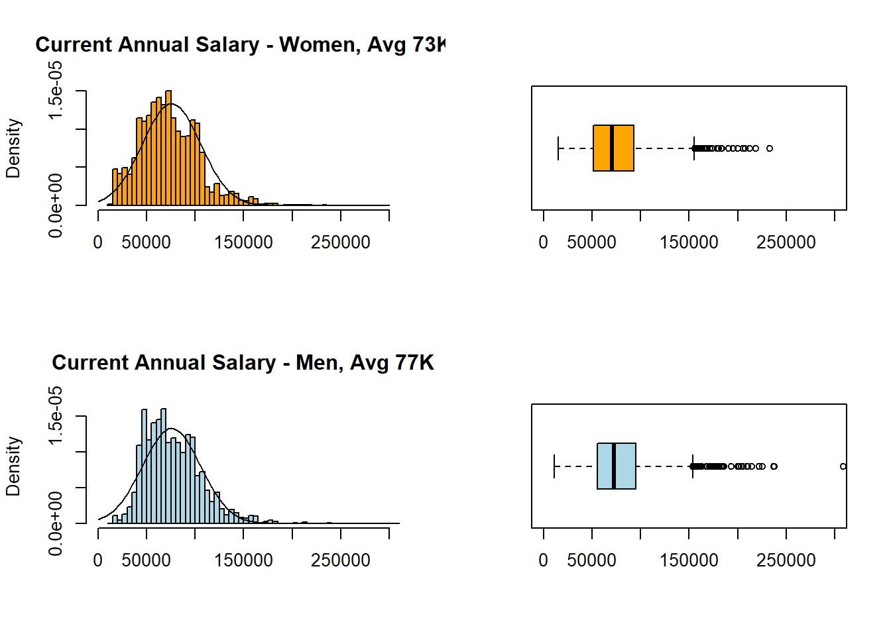
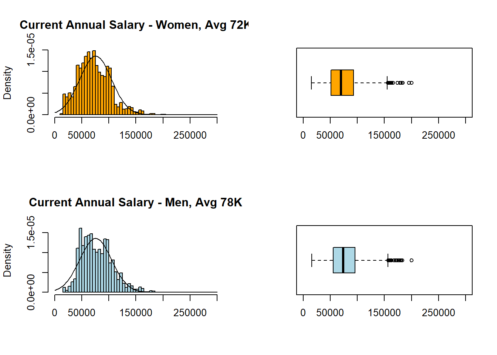
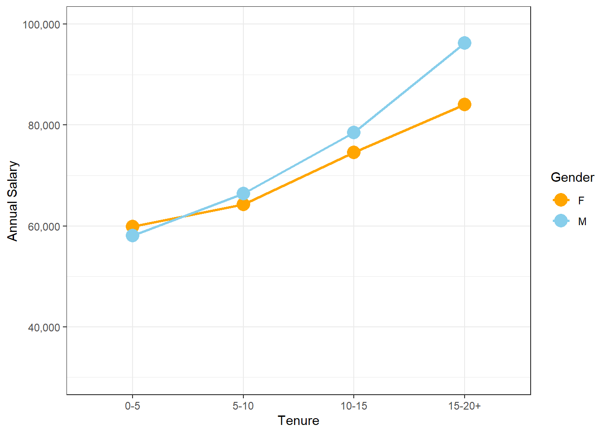
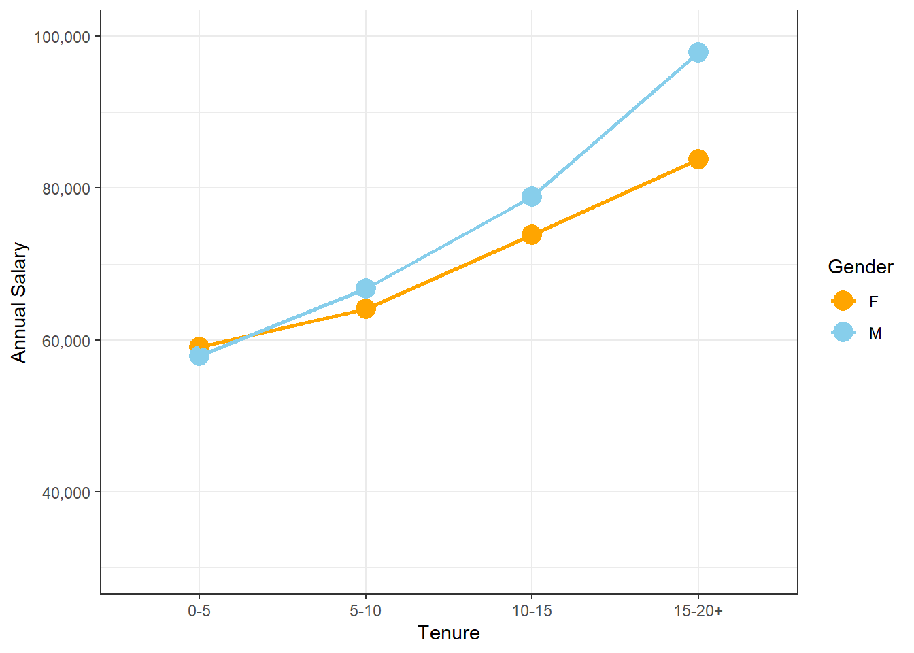
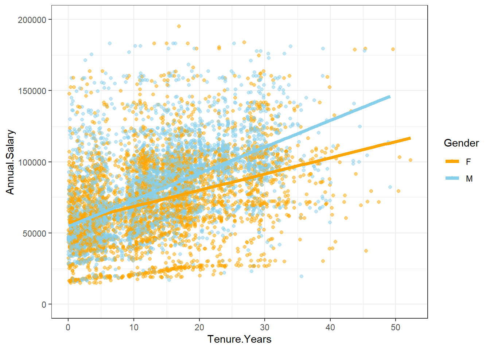
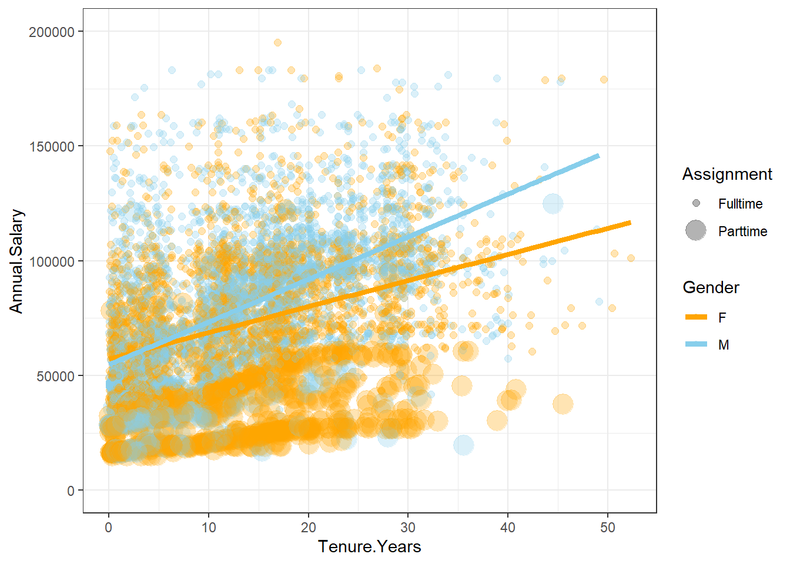

3.3 Gender Pay Gap
In this section, we’ll discuss Gender Pay Gap and leverage the topic to practice hypotheses setting and testing by ANOVA and Linear Regression. I based this section on three articles published on my blog: (1) Gender Pay Gap: Practice People Analytics With Open Data, (2) Finding Hidden Patterns In Gender Pay Gap Data, and (3) Gender Pay Gap: More Hidden Patterns.
3.3.1 The use case
The gender pay gap exists despite regulation, policies, hype, and preoccupation with the subject. Women still earn less than men in many countries, sectors, and roles. Moreover, the gap has been persistent over the years.
There is no single cause for the gender pay gap. The reasons include: Gender-biased industries and roles in which female-dominated jobs often have lower wages and in which women are under-represented in high-income jobs; Bias and discrimination in recruitment, promotion, and compensation decisions; Disproportionate share of unpaid domestic work and care that women tend to handle more; Women’s careers are impacted by more time spent out of work as parents, and suffer more from the lack work flexibility in senior roles.
To address the gender pay gap, employers may intervene in different ways. First, they need to analyze their pay data and processes. Then, after understanding the source of bias, they can take action and review the impact over time.
Closing the gender pay gap is essential for everybody, not only women. Employers who take action to close the pay gap may benefit from higher retention, improved employee engagement, higher levels of productivity, and lower legal risks. In addition, the entire society may benefit as women increase their bargaining power and independence and decrease the chance of poverty later in life.
3.3.2 Data source
My source and inspiration for this case study was a dataset of employee salaries in a municipal authority organization, Montgomery County, Maryland, in 2017. For public transparency, this organization shares its dataset. The employee salaries in 2017 contained almost 10 thousand records and included annual salary information and some demographics and background variables (gender, tenure, role, department, full and part-time position). However, for our educational purpose, I anonymized and randomized it, so, from the following findings, it would be impossible to point to individuals or even recognize the organization. But I guarantee that the dataset I used is realistic.
Before we proceed to the HR briefing, there are some notes worth mentioning about this dataset. First, it includes only binary gender categories, restricting the analysis to comparing only men vs. women. However, some organizations use more gender categories nowadays.
Secondly, in many organizations, the data about employees’ occupation, seniority, gender, mode of employment, and salary details are likely to be stored in more than one platform, for example, the HR platform and payroll software. Moreover, there may be more than one payroll system in global organizations, and it is necessary to merge the data and manipulate it for a unified currency. If your platforms are not integrated, you must incorporate data from different sources for your project and make sure that your process is reproducible.
Lastly, If you’d look at the CSV file for this demo, you’d immediately see - It is tidy data! It assigns each row to an employee and each column to a variable. Each cell represents only one value specific to one employee and one variable. Of course, the data you pull out for analysis may not be so neat in real-life situations. There will be duplicate records, missing entries, typos, and more. Your data scientist will need to clean and prepare the data for the project. This work may be tedious, but the systematic errors you may find will help you establish better maintenance practices and improve the data over time. It would be helpful beyond best practice because more and more countries regulate the gender pay gap.
3.3.3 HR briefing
Suppose you are an HR leader in a municipal authority organization. Like many public organizations, your employer is subjected to strict regulations regarding equal pay. However, only going beyond the basic comparison between men and women will enable you to spot patterns of bias and reach some actionable insights. Therefore, you decide to shed light on the still-existing pay gap, understand its factors, direct your intervention, and guarantee that you discuss insights in a broader context of the business and workforce markets. In other words, you decide to go beyond reporting and go the extra mile to explore the data.
What is the difference between reporting and exploring? To explore data, you must have an analytical mindset. It enables you to analyze information and identify patterns in the data to solve problems. So you use your curiosity by asking the question, “why?”. It will enable you to tell a straightforward story, impact any topic related to people, track improvement and progress, and certainly contribute to closing the gender pay gap.
You may already have dashboards that enable you to present different metrics and KPIs and answer the questions: Did we reach our goals? How far are we from achieving our goals? However, by using dashboards, you can’t answer the question: Why? Instead, you need to analyze the factors that drive those KPIs presented on your dashboards. Therefore, you will explore the data beyond finding differences between men and women in compensation and explore how those differences occurred, implying what you should do about it. You’ll reach actionable insights by actively working with your data scientist. When you ask “why,” the data scientist will provide answers based on the data.
3.3.5 Analysis using R
par(mfrow = c(2, 2))
hist(Employees$Annual.Salary[Employees$Gender=="F"],
col="orange", xlim=c(0,300000), breaks = 50, freq = FALSE, xlab = NULL, main = "Current Annual Salary - Women, Avg 73K")
curve(dnorm (x, mean = mean(Employees$Annual.Salary),
sd = sd(Employees$Annual.Salary)), add = TRUE)
boxplot(Employees$Annual.Salary[Employees$Gender=="F"],
horizontal = TRUE, col="orange", ylim = c(0,300000))
hist(Employees$Annual.Salary[Employees$Gender=="M"],
col="lightblue", xlim=c(0,300000), breaks = 50, freq = FALSE, xlab = NULL, main = "Current Annual Salary - Men, Avg 77K")
curve(dnorm (x, mean = mean(Employees$Annual.Salary),
sd = sd(Employees$Annual.Salary)), add = TRUE)
boxplot(Employees$Annual.Salary[Employees$Gender=="M"],
horizontal = TRUE, col="lightblue", ylim = c(0,300000))
par(mfrow = c(2, 2))
hist(EmployeesDiverse$Annual.Salary[EmployeesDiverse$Gender=="F"],
col="orange", xlim=c(0,300000), breaks = 50, freq = FALSE, xlab = NULL, main = "Current Annual Salary - Women, Avg 72K")
curve(dnorm (x, mean = mean(EmployeesDiverse$Annual.Salary),
sd = sd(EmployeesDiverse$Annual.Salary)), add = TRUE)
boxplot(EmployeesDiverse$Annual.Salary[EmployeesDiverse$Gender=="F"],
horizontal = TRUE, col="orange", ylim = c(0,300000))
hist(EmployeesDiverse$Annual.Salary[EmployeesDiverse$Gender=="M"],
col="lightblue", xlim=c(0,300000), breaks = 50, freq = FALSE, xlab = NULL, main = "Current Annual Salary - Men, Avg 78K")
curve(dnorm (x, mean = mean(EmployeesDiverse$Annual.Salary),
sd = sd(EmployeesDiverse$Annual.Salary)), add = TRUE)
boxplot(EmployeesDiverse$Annual.Salary[EmployeesDiverse$Gender=="M"],
horizontal = TRUE, col="lightblue", ylim = c(0,300000))
interaction2 <- aggregate(Employees$Annual.Salary,
by=list(Employees$Gender, Employees$Tenure),
FUN=mean, na.rm=TRUE)
colnames(interaction2) <-c("Gender", "Tenure", "Salary")
interaction2plot <- ggplot(data=interaction2, mapping=aes(x=Tenure, y=Salary, color=Gender)) +
geom_point(size = 5) + geom_line(aes(group = Gender), size=1) +
scale_y_continuous(name="Annual Salary", limits=c(30000,100000), labels = scales::comma) +
scale_color_manual(values=c("orange", "skyblue")) + theme_bw()
interaction2plot
interaction2diverse <- aggregate(EmployeesDiverse$Annual.Salary,
by=list(EmployeesDiverse$Gender, EmployeesDiverse$Tenure),
FUN=mean, na.rm=TRUE)
colnames(interaction2diverse) <-c("Gender", "Tenure", "Salary")
interaction2plotdiverse <- ggplot(data=interaction2diverse, mapping=aes(x=Tenure, y=Salary, color=Gender)) +
geom_point(size = 5) + geom_line(aes(group = Gender), size=1) +
scale_y_continuous(name="Annual Salary", limits=c(30000,100000), labels = scales::comma) +
scale_color_manual(values=c("orange", "skyblue")) + theme_bw()
interaction2plotdiverse
reg2plotdiverse <- EmployeesDiverse %>%
ggplot(aes(Tenure.Years, Annual.Salary, color=Gender)) +
geom_point(alpha = 0.5) +
geom_smooth(method = lm, se = FALSE, aes(colour=Gender), size=1.75) +
ylim(0,200000) +
scale_color_manual(values=c("orange", "skyblue")) + theme_bw()
reg2plotdiverse
reg2Aplotdiverse <- EmployeesDiverse %>%
ggplot(aes(Tenure.Years, Annual.Salary, color=Gender, size=Assignment)) + #Part-time dots enlarged
geom_point(alpha = 0.3) +
geom_smooth(method = lm, se = FALSE, aes(colour=Gender), size=1.75) +
ylim(0,200000) +
scale_color_manual(values=c("orange", "skyblue")) + theme_bw()
reg2Aplotdiverse
reg2Bplotdiverse <- EmployeesDiverse %>%
ggplot(aes(Tenure.Years, Annual.Salary, color=Gender, size=Assignment)) +
geom_point(alpha = 0.3) +
geom_smooth(method = lm, se = FALSE, aes(colour=Gender, linetype=Assignment), size=1.75) + #Part-time line separated
ylim(0,200000) +
scale_color_manual(values=c("orange", "skyblue")) + theme_bw()
reg2Bplotdiverse